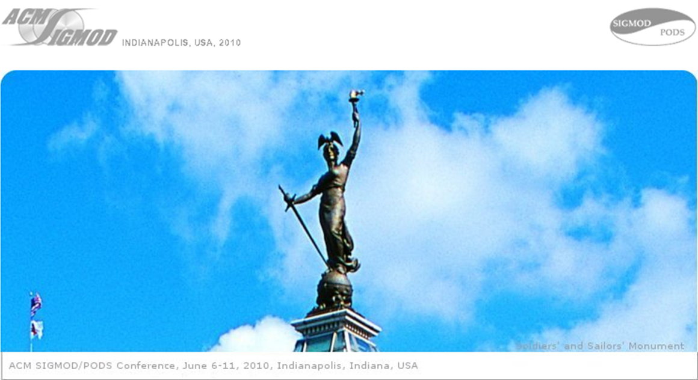

|
|
    |
|
Welcome to DiSC
Journals TODS VLDBJ PVLDB Forums DE Bulletin SIGKDD Explorations SIGIR Forum SIGMOD Record Conferences ADC '10 APCCM '10 CIKM '10 EDBT '10 Hypertext '10 ICDT '10 JCDL '10 KDD '10 MIR '10 PODS '10 SIGIR '10 SIGMOD '10 SIGSPATIAL GIS '10 Workshops DaMoN '10 DBTest '10 DOLAP '10 IDAR '10 KEYS '10 MobiDE '10 SOCC '10 WANDS '10 WebDB '10 Videos SIGMOD/PODS '10 
|

This DVD contains videos from
SIGMOD/PODS 2010
which was held from June 6-11, 2010 in Indianapolis, Indiana, USA.
The videos are in MOV format.
Ahmed Elmagarmid (play talk)
Luiz Andre Barroso (play talk)
Joseph M. Hellerstein (play talk)
Jeffrey Dean (play talk)
Jason Sobel (play talk)
Rob Woollen (play talk) Copyright © 2010 Association for Computing Machinery |